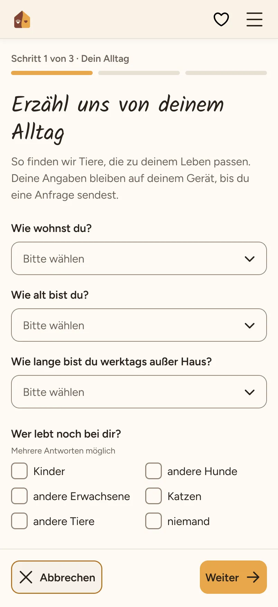
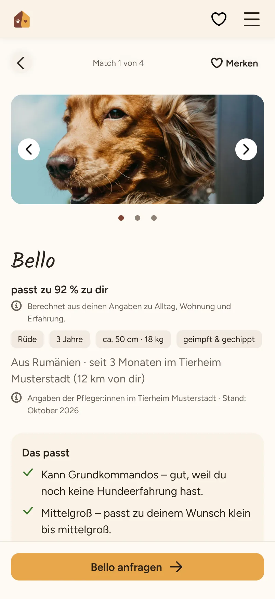

Case Study · Product Design Bootcamp
Pfotenfinder
Wie Menschen und Tierschutztiere zueinander finden, bevor allein das Herz entscheidet.


Kurz gesagt
Problem
Menschen verlieben sich in ein Foto und prüfen erst danach, ob das Tier zu ihrem Alltag passt. Passt es nicht, wird es zum Rückläufer.
Ansatz
Ein Matching-Modul direkt auf der Website des Tierschutzvereins: erst Fragen zum eigenen Leben, dann passende Tiere mit Begründung. Umgesetzt auch als White-Label-Version mit dem echten Verein Ein Herz für Streuner e.V.
Stand
Zwei HiFi-Prototypen, mobil und Desktop. Der MidFi-Test mit 2 Personen ergab 23 Tickets, der HiFi-Test mit 5 Personen ist vorbereitet.
01 · Das Problem
Guter Wille reicht nicht.
Die Nutzerseite. Suchende recherchieren gründlich, entscheiden aber nach Bauchgefühl. Tierprofile sind kurz, floskelhaft und oft mit veralteten Fotos, die eigene Eignung lässt sich daraus nicht ableiten. Wer Zweifel hat, merkt es meist erst nach dem Einzug.
Die Vereinsseite. Nur 18 % der Tierheime in Deutschland haben noch Aufnahmekapazität (Deutscher Tierschutzbund, 2024). Häufigste Abgabegründe sind Überforderung und fehlende Zeit. Vermittler:innen sieben ungeeignete Anfragen mit hohem Aufwand aus, per Telefon, Selbstauskunft und Vorkontrolle.
Die Spannung. Jede Fehlvermittlung kostet doppelt: Das Tier verliert erneut sein Zuhause, und der Platz fehlt für das nächste. Hilferufe wie dieser aus dem Umfeld von Ein Herz für Streuner e.V., wo ich mich ehrenamtlich engagiere, zeigen das deutlich.
Kann jemand helfen? Amber wird nach einem Tag zum Rückläufer, weil die Adoptanten ihr keine Ruhe zum Ankommen geben.
02 · Research
Drei Quellen, eine Frage.
Ich habe Hypothesen vorab formuliert und mit festen Schwellenwerten für Bestätigung und Widerlegung getestet. Hypothesen sind für mich Werkzeuge, um Annahmen sichtbar und widerlegbar zu machen, keine Schlussfolgerungen.
Interviews
Drei Adoptierende mit unterschiedlicher Tierart, Phase und Wohnsituation, dazu eine Vermittlerin als Expertin
Umfrage-Antworten
84 in relevanter Phase, davon 64 mit Online-Recherche als Basis der Detailfragen
Quellen im Desk Research
u. a. Powell et al. (2021), Graf (2025), Deutscher Tierschutzbund. Viele Studien stammen aus den USA, Annahmen für Deutschland habe ich markiert
Erkenntnisse
Aus allen drei Quellen zusammengeführt und geclustert
H2: Die Auswahl erfolgt primär emotional und optisch.87,5 % halten Fotos für relevant, nur 20,3 % die Rasse.
bestätigtH7: Menschen mit Tierschutzbezug kontaktieren deutlich eher ein Tierheim als eine Zucht.NPS der Kontaktwahrscheinlichkeit: +43 für Tierheime, −68 für Züchter. Diese Hypothese kam nicht aus meinem ursprünglichen Set, sondern aus den Daten.
bestätigtH3: Menschen können ihre eigenen Rahmenbedingungen nur unzureichend in konkrete Anforderungen an ein Tier übersetzen.Bedarf an Eignungs-Infos 79,7 %, berichtete Zweifel an der eigenen Eignung nur 18,75 %.
teilweise bestätigtH4: Informationen über Tiere sind verstreut und unglaubwürdig.93,75 % fanden ihre Quellen glaubwürdig.
widerlegtH1, H5, H6: Mit diesem Instrument nicht testbar.Offen für Folgeforschung.
offen
Die Widerlegung von H4 hat die Richtung verändert.
Ich hatte ein Plattformproblem vermutet: zu viele, zu schlechte Quellen. Tatsächlich ist die Landschaft vertrauenswürdig und konzentriert. Damit fiel die Idee eines weiteren Portals weg, und das Modul auf der Vereinswebsite rückte in den Fokus.
03 · Erkenntnisse
Erst verlieben, dann nachdenken.
Emotionale Auswahl
Bilder entscheiden. Begründet wird später: „Die war so süß, dass ich mich so direkt in sie verguckt habe.“ Das ist eine Designbedingung, kein Fehler, den man wegerziehen sollte.
Unterschätzte Eignung
79,7 % halten Infos zur nötigen Eignung für relevant, aber nur 18,75 % sehen die eigene Eignung als mögliches Hemmnis. Die Lücke ist für Betroffene unsichtbar.
„Ich mache wirklich ein Horrorszenario, wie es laufen kann, und die Leute sagen: Ja, ja, alles super. Kriegen wir hin.“
Vermittlerin im Interview
Vertrauen ist schon da
68,3 % vertrauen der Website des Tierheims oder Vereins am meisten, und nicht die Menge an Info fehlt, sondern Info, die sich auf das eigene Leben übertragen lässt. Eine Lösung muss dorthin, nicht daneben.
„Die Persönlichkeitsbeschreibungen sind immer recht kurz … Es wirkt sehr unpersönlich.“
Adoptierende im Interview
Klare Haltung zur Zucht
Die Zielgruppe ist vom Tierschutz überzeugt und lehnt Züchter kategorisch ab. Ein Muster, das erst in den Daten auftauchte, und ein möglicher Bias, den ich offen mitführe.
Kern-Insight
Es fehlt ein Passungscheck, bevor man sich emotional an ein Tier bindet.
04 · Segment & Persona
Für wen zuerst?
Drei Segmente, eine bewusste Wahl. Die Systematisch Suchenden haben den am besten belegten Pain Point und sind über einen Kanal erreichbar, dem sie schon vertrauen: 92,2 % nutzen Vereinswebsites.
- Die Vernetzten ÜberzeugtenGrößter Teil der Zielgruppe, gut belegt, aber kaum Hebel
- Die Systematisch Suchenden · gewähltBestbelegter Pain Point und ein realistischer, vertrauter Interventionsort
- Die Unentschlossenen Einsteiger:innenGroßer Impact möglich, aber kaum Belege
Jana-Sophie Meyer
etwa 28 · will einen Hund retten · sucht allein, ohne Netzwerk
Streng aus den Quellen abgeleitet: Sie arbeitet neu remote, hält sich durchs Gassigehen mit Hunden von Verwandten für „einigermaßen erfahren“, recherchiert strukturiert und wartet trotzdem auf das Bauchgefühl „Der Hund ist es!“.
Jana-Sophie braucht verlässliche, individuelle Infos zu Wesen, Gesundheit und ihrer eigenen Eignung, weil Standard-Beschreibungen ihr weder zeigen, wie sich das Tier zuhause verhält, noch ob sie den Anforderungen gerecht wird.
Was sie braucht
- Aktuelle, persönliche Infos auf einem vertrauten Kanal
- Konkrete, überprüfbare Angaben zu Gesundheit und Verträglichkeit
Was sie bremst
- Generische Beschreibungen ohne persönliche Einschätzung
- Zweifel an der Seriosität
- Unklare Vermittlungsbedingungen
05 · How might we
Wie können wir Jana-Sophie den Abgleich zwischen ihren Lebensumständen und den Bedürfnissen eines Tieres so früh wie möglich ermöglichen?
Aus fünf HMW-Fragen die einzige, die den zeitlichen Kern des Problems trifft. Sie dreht die gewohnte Reihenfolge um: erst Eignung, dann Fotos.
06 · Konzept
Kein weiteres Portal. Ein Matching, wo Vertrauen schon ist.
Aus acht Ideen habe ich drei als Idea Napkins ausgearbeitet und nach Importance, Effort und Impact bewertet. Das Matching habe ich weiterverfolgt: Es läuft direkt auf der Website des Tierschutzvereins, denn ohne die Vereine geht es nicht.
Matching
Fragen zu Alltag und Erfahrung, danach nur passende, verfügbare Tiere.
Riskanteste Annahme: Nutzer:innen vertrauen der Vorauswahl.
Blind Date
Tiere zuerst ohne Fotos, nur über Wesen und Bedürfnisse. Die Idee packt das Problem an der Wurzel und landete in meiner Bewertung auf Platz 2.
Warum nicht? 87,5 % stufen Fotos als relevant ein. Nimmt man sie weg, öffnen Menschen trotzdem alle Profile und sortieren nach Optik, oder gehen woanders hin. Das Vertrauen, das die Research als größtes Asset gezeigt hat, wäre verspielt.
Berater
Ein Chatbot, der Lebensumstände abfragt und Einschätzungen gibt.
Warum nicht? Vertrauen in einen Chatbot bei einer so folgenreichen Entscheidung war die am wenigsten belegte Annahme der drei. Die Research zeigte Vertrauen in Vereine, nicht in Technik.
- Schritt 1Bedarf entstehtMatching öffnen
- Schritt 2Eignung prüfenFragen zum Alltag beantworten
- Schritt 3Optionen findenPassende Tiere samt Begründung sehen
- Schritt 4Auswahl treffenProfile ansehen, Tier auswählen
- Schritt 5Anfrage stellenAnfrage an den Verein senden
Vier Entscheidungen im Flow
- Weniger Auswahl, bessere Entscheidung. Statt einer Liste aller Tiere zeigt Pfotenfinder nur passende. Das senkt Choice Overload (Hick’s Law). Eine freie Suche als Umweg habe ich im MVP bewusst weggelassen, damit niemand den Fragebogen überspringt.
- Moment of Value: die Ergebnisliste. Jedes Tier ist begründet ausgewählt, ein Verlieben in ein unpassendes Tier wird unwahrscheinlicher.
- Critical Moment: die Anfrage. Ein Tier kann schon reserviert sein, Angaben können geschönt sein, Technik kann ausfallen. Deshalb gehen Anfragen direkt ans Tierheim, wo erfahrene Vermittler:innen sie prüfen.
- Kein Konto, keine Hürde. Angaben bleiben lokal auf dem Gerät. Wer wiederkommt, muss nicht neu anfangen, und niemand muss sich registrieren, bevor er ein Tier gesehen hat.
Modul statt Portal
Die Chance liegt nicht in einer weiteren Vermittlungsplattform, die Vereinen zusätzliche Pflege abverlangt und Suchende mit Werbung stört. Pfotenfinder kommt zu den Vereinen, dorthin, wo das Vertrauen liegt. Im Business Model Canvas habe ich das als günstiges Abo angelegt: Vereine sind spendenfinanziert, das Modell bleibt bewusst schlank. Ein vergleichbares Angebot für den deutschen Markt habe ich nicht gefunden.
Ethik als Designkriterium
Bestehende Matching-Tools setzen mit Sprache unter Druck: „dein neuer bester Freund“ neben Zahlen zu getöteten Tieren. Findet man dann kein Match, fühlt man sich schuldig. Meine Leitplanken: sachliche Fakten, keine suggestiven Versprechen, und ein Ergebnis ohne Treffer ist kein Scheitern der Person.
Responsible Design
- Alt-Texte, die das Tier beschreiben
- Matching ohne Swipe-Zwang, auch per Tastatur bedienbar
- Einfache Sprache für Fachbegriffe wie Schutzgebühr, Vorkontrolle oder Giardien
07 · Wireframing & Design
Warm, vertraulich, persönlich. Und anpassbar.
Leitsatz: das Tierheim um die Ecke, nicht die Kampagne. Die Gestaltung soll Vertrauen stützen, nicht Mitleid erzeugen. Und weil Pfotenfinder auf den Seiten verschiedener Vereine lebt, muss sie deren Farben aufnehmen können.
Wireframing: drei Stufen, jede mit einer Frage
- LoFiTrägt der Happy Path?Fragebogen vor den Tieren, dann Ergebnisliste, Detailseite und Anfrage, ohne Umweg über eine freie Suche
- MidFi v1/v2Welche Bausteine wiederholen sich?Wiederverwendbare Komponenten für Fragen, Match-Karten, Detail-Accordions und Formulare
- MidFi v3Wirkt es verlässlich?Systematisches Audit und Veredelung, siehe Iteration
MVP-Schnitt über die Story Map
Fünf Aktivitäten trugen den Scope. Ins MVP kamen nur die Tasks, mit denen sich die riskanteste Annahme testen lässt: Akzeptieren Nutzer:innen eine eingeschränkte Auswahl und finden darin ein passendes Tier? Ergebnisse vergleichen habe ich bewusst zurückgestellt.
Progressive Disclosure
Gesundheit, Verträglichkeit und Erfahrungsbedarf liegen auf der Detailseite in Accordions. Das hält die Seite mobil scannbar. Das Foto bleibt oben: Die emotionale Verbindung soll entstehen, nur eben erst bei passenden Tieren.
Visual Design

Marke
Der Claim „Zuhause gesucht, zueinander gefunden.“ trägt beide Seiten der Vermittlung. Das Logo mit einer Pfote als Aussparung in einem Standort-Pin habe ich wieder verworfen, weil es dem Logo von Tractive zu nahe kam. Gewählt habe ich ein Haus aus zwei ineinandergreifenden Hälften mit Pfote und Herz: Mensch und Tier, die zusammenpassen.
Typografie mit Rollen
Kalam bleibt Display-Schrift für Headlines, die Handschrift ist die Markenstimme. Für die UI habe ich drei parallele Familien auf Figtree vereinheitlicht. Zeilenhöhe und Laufweite sind nach Rolle gesetzt.
Farbe als System
13 semantische Tokens steuern 481 Füllungen und 155 Konturen. Statt drei Schwarztönen nutze ich ein warmes Fast-Schwarz (#2A211B), Amber und Grün sind entsättigt, damit sie ruhig wirken. Grün steht für Passung, Amber für Handlung.
Form und Tiefe
Eine Radius-Skala 6/8/12/16/20 plus Pill ersetzt zwölf zufällige Werte. Match-Karten tragen Hierarchie über zwei braun getönte Schatten statt über Rahmen.
Skalierbar als White Label
Die Token-Struktur ist die Grundlage dafür, das Modul im Branding eines Vereins auszuspielen. Für Ein Herz für Streuner habe ich den HiFi-Prototyp auf Vereinsfarben und echte Tiere des Vereins umgestellt.
Accessibility
Sichtbare Labels über allen Formularfeldern statt reiner Placeholder. Der Fortschritt ist segmentiert, sodass der Schritt auch ohne Lesen erkennbar ist.
08 · Prototyping & Testing
Akzeptiert, aber nur, wenn der Score nachvollziehbar ist.
Der Test sollte eine Frage beantworten: Akzeptieren Menschen eine Vorauswahl, wenn sie ein Tier suchen, in das sie sich verlieben wollen? Das war die riskanteste Annahme hinter dem Matching. Beide Testpersonen haben den Flow ohne Abbruch abgeschlossen und das Matching aktiv genutzt. Wie der Score zustande kommt, blieb jedoch unklar.
Setup
Moderierter Usability-Test des MidFi-Prototyps (v4) auf dem iPhone, mit Thinking Aloud, drei Aufgaben und Abschlussinterview. Das Szenario versetzte die Teilnehmenden in die Lage der Persona Jana-Sophie. Zwei Sessions im Oktober 2026, 21 und 16 Minuten. Vorab habe ich vier Test-Hypothesen formuliert.
Die Selbstauskunft im Fragebogen wird als passend empfunden.Beide füllen selbstständig aus, Angemessenheit 4 von 4. Fachbegriffe und die Altersauswahl verunsichern.
bestätigt, mit VorbehaltInfos und Score wirken glaubwürdig, nicht werblich.Nichts wirkt werblich. Unerklärte Abzüge, fehlende Quellen und vage Angaben senken die Glaubwürdigkeit.
teilweiseDie Anfrage wird selbstständig abgeschlossen.Beide senden die Anfrage in unter einer Minute ab.
bestätigtDie Passung wird verstanden und genutzt.Beide sortieren Hunde über die Match-Hinweise aus. Eine Person versteht den Score nur als Rangfolge.
teilweise
Top-Befunde
Die fehlenden 8 %
Beide fragen unabhängig voneinander, warum Bello nicht 100 % hat, obwohl alle Punkte grün sind. Das stärkste Muster im Test.
Matching als Ausschluss-Hilfe
Physiotherapie, Jagdtrieb und nötige Erfahrung führen direkt zum Aussortieren. Die Hinweise sind mindestens so wertvoll wie die Prozentzahl.
Projektvokabular statt Nutzersprache
„Passung ist ein dummes Wort.“ Der Begriff war beiden fremd.
Herz statt Karte
Eine Person tippt auf das Merken-Herz statt auf die Karte und kommt ohne Hinweis nicht zur Detailseite. Die einzige Stelle, an der ich eingreifen musste.
Unsicherheit rund ums Absenden
Davor: „Es fühlt sich zu einfach an.“ Danach: „Startseite. Und jetzt?“
Kontraste
Von beiden bemängelt, bei einer Person durchgängig.
Ehrlich zur Aussagekraft
Zwei Personen liefern erste Hinweise, keine statistische Bestätigung. Eine Testperson hatte Hundeerfahrung und fiel mehrfach aus der Persona-Rolle, bei ihr lief zudem eine falsche Prototyp-Version. Daraus habe ich vier Methodik-Tickets abgeleitet, statt die Befunde zu glätten. Wenn zwei Personen unabhängig an derselben Stelle stolpern, werte ich das trotzdem als klares Muster.
Vom Befund zum Backlog
- 23Tickets insgesamt
- 6kritisch: blockieren den Flow oder untergraben das Vertrauen
- 11wichtig: Reibung, die Antworten oder Verständnis verschlechtert
- 6Nice-to-have
Priorisiert habe ich nach der Wirkung auf das Vertrauen ins Matching. Die kritischen und wichtigen Design-Tickets flossen in die überarbeitete HiFi v3.
Zweite Testrunde: HiFi v3
Vorbereitet
Fünf Personen aus dem Fokussegment, ohne eigene Hundeerfahrung und ohne Teilnahme am ersten Test. Die Runde prüft gezielt die 20 Tickets, die ich zur Überprüfung markiert habe. Ein Ticket gilt als gelöst, wenn mindestens 4 von 5 Personen das Kriterium ohne Hilfe erfüllen. Dazu erfasse ich die Single Ease Question pro Aufgabe und den Vertrauenswert in die Tierinfos (Ziel ≥ 4 von 5, MidFi: 3).
Warum kein A/B-Test?
Für die wichtigste Änderung, den getrennten Match-Kasten, habe ich eine eigene Test Card angelegt. Ein A/B-Test wäre unrealistisch: Anfragen sind selten. Bei angenommenen 5 % Anfragequote bräuchte man für 20 % Effekt rund 8.000 Personen pro Variante, und Saison und Tierbestand würden das Ergebnis verzerren. Stattdessen prüft ein moderierter Verständnistest mit 5 Personen beide Versionen in wechselnder Reihenfolge: „Erklär mir, warum Bello nicht 100 % erreicht.“
09 · Iteration
Ein unerklärter Abzug wiegt schwerer als ein niedriger Wert.
Die wichtigste Iteration entstand aus der Frage, die zwei Testpersonen unabhängig stellten: Warum hat Bello nur 92 %? Daraus wurde ein Matching, das seine Vorbehalte offen zeigt. Den Boden dafür hatte ein ehrliches Audit meiner eigenen MidFi v2 bereitet: Sie sah fertig aus, hatte aber kein System darunter.
Vom Testbefund zur Änderung
-
Was nicht funktionierte
Fehlende 8 % unerklärt; „Warum X passt“ enthielt auch nicht passende Punkte, „etwas irritierend“
Geändert in HiFi v3Abzüge konkret benennen. Match-Kasten getrennt in „Das passt“ und „Das solltest du wissen“; jede Ergebniskarte zeigt eine Stärke und einen Vorbehalt
Trade-offBei schwer vermittelbaren Tieren kann „Das solltest du wissen“ abschrecken. Ich nehme das bewusst in Kauf: Weniger, aber passendere Anfragen sind für den Tierschutz ein Erfolg
-
Was nicht funktionierte
Score nur als Rangfolge verstanden; „Passung“ fremd
Geändert in HiFi v3„passt zu 92 %“ plus Erklärsatz: berechnet aus deinen Angaben zu Alltag, Wohnung und Erfahrung
Trade-offDas präzisere Fachwort fällt weg, die Sprache der Zielgruppe gewinnt
-
Was nicht funktionierte
Tippen auf das Herz statt auf die Karte
Geändert in HiFi v3Karte klar klickbar mit Pfeil; Merken nur noch auf der Detailseite, mit Label; Merkliste mit Zähler im Header statt im Menü
Trade-offMerken direkt aus der Liste entfällt, ein Schritt mehr für einen eindeutigen Einstieg. Der Impuls für die sichtbare Merkliste kam aus dem Präsentations-Feedback
-
Was nicht funktionierte
Vertrauen in die Tierinfos nur 3 von 5: keine Quelle, „gesund“ nichtssagend, „mittelgroß“ ungenau
Geändert in HiFi v3Quelle und Stand der Angaben, Größe in cm und Gewicht in kg, konkrete Gesundheit, Ganzkörperfotos mit Großansicht, Abschnitt zur Vorgeschichte
Trade-offMehr Daten, die ein Verein aktuell halten muss
-
Was nicht funktionierte
„Darf ich auf Anfrage senden drücken?“ und danach „Startseite. Und jetzt?“
Geändert in HiFi v3Hinweis über dem Button: „Unverbindlich, aber ernst gemeint“; Bestätigung mit 5-Tage-Zusage und „Weitere Matches ansehen“
-
Was nicht funktionierte
Fachbegriffe wie „positiv arbeitende Hundeschule“ unklar; Altersauswahl versehentlich abgewählt
Geändert in HiFi v3Hilfetexte, konkrete Fellpflege-Optionen, feinere Altersklassen, „Mehrere Antworten möglich“
Trade-offEtwas mehr Text im Fragebogen
-
Was nicht funktionierte
Grauer Text und Auswahlfelder zu kontrastarm
Geändert in HiFi v3Alle Kontraste auf WCAG AA: 4,5:1 für Text, 3:1 für UI-Elemente; ausgewählte Werte dunkel und fett
Trade-offDie zurückhaltend warme Palette wird etwas kräftiger
MidFi v2 → v3: Audit statt Bauchgefühl
- Schrift
Drei Familien parallel, eine davon in Figma gar nicht vorhanden
NachherFigtree für UI, Kalam für Display, Skala nach Rolle
- Farbe
Reines Schwarz 74×, warme und kühle Grautöne gemischt, Akzente bis 100 % Sättigung
NachherEin warmes Fast-Schwarz, eine Grau-Familie, entsättigte Akzente
- Tokens
Keine Variablen, keine Styles
Nachher13 semantische Tokens, 636 Bindungen
- Radien und Abstände
12 Radien, Gaps ohne Basis-Skala
NachherRadius-Skala 6 bis 20 plus Pill
- Hierarchie
Karten über Rahmen, ein einziger Schatten
NachherGetönte Elevation-Stufen für Karten, Header, Sticky-CTA, Dialog
- „Kein Treffer“
Drei gleich aussehende Buttons
NachherPrimär, Sekundär, Textlink: klare Rangfolge
- Formulare
Nur Placeholder als Label
NachherSichtbare Labels, realistische Beispielwerte
- Microcopy
„Danke! …“, „Finde deine Pfote!“
Nachher„Danke – deine Anfrage für Bello ist angekommen.“
Bewusst nicht gemacht
Die Accordions auf der Detailseite sind geblieben, obwohl sie Inhalte verbergen: mobil ist progressive Disclosure hier richtig. Hover- und Pressed-States habe ich für den statischen Prototyp nicht angelegt. Einen Vorschlag aus Figma Make, den Match-Score direkt aufs Tierfoto zu legen, habe ich verworfen: Er verdeckt genau das, worum es geht, das Tier.
HiFi: Entscheidungen unter echten Constraints
Datenspeicherung
Ohne Speicherung müssten Nutzer:innen den Fragebogen bei jedem Besuch neu ausfüllen. Mit Konto und Server wäre die Hürde für Vereine und Datenschutz zu hoch. Ich habe mich für lokale Speicherung auf dem Gerät entschieden: kein Konto, kein Server, Anfragen gehen direkt ans Tierheim. Ich gewinne Komfort und Vertrauen und verzichte auf geräteübergreifende Nutzung.
Echter Partner, echte Grenzen
Bei Ein Herz für Streuner hat der Verein die Spielregeln gesetzt:
- Die Selbstauskunft läuft über PetOffice, ohne Schnittstelle zum Vorausfüllen. Statt eine Integration vorzutäuschen, habe ich die Anfrage zur Übergabe umgebaut.
- Tiermerkmale pflegt der Verein nur auf seiner Website. Das Matching muss mit diesen Daten auskommen.
- Interne Vermittlungsinfos dürfen nicht veröffentlicht werden. Die Case Study zeigt nur, was öffentlich ist.
- Pfotenfinder duzt, passend zum Verein.
10 · Finales Design
Zwei Prototypen, ein Produkt.
Pfotenfinder als eigenständiges Konzept und als Modul im Branding eines echten Vereins. Die Vereinsversion zeigt, dass die Strategie „Modul statt Portal“ in der Praxis trägt.
Der Happy Path in fünf Screens

Alltag zuerstDrei kurze Schritte mit sichtbarem Fortschritt, vor dem ersten Tierfoto. Die Angaben bleiben auf dem Gerät, bis eine Anfrage rausgeht. 
Fachbegriffe erklärtWas ein Angsthund oder Herdenschutzhund ist, steht direkt an der Frage. So schätzt sich niemand aus Unwissen falsch ein. 
Gründe statt FotosJedes Match zeigt, was passt und worauf man achten sollte, dazu die Entfernung zum Tierheim. Die Eignung steht vor dem Verlieben. 
Nachvollziehbares MatchWoraus der Wert berechnet ist und von wem die Angaben stammen, steht direkt dabei. Das zahlt auf die riskanteste Annahme ein: Vertrauen in die Vorauswahl. 
Keine FunkstilleDie Antworten gehen als Selbstauskunft mit. Danach ist klar, wann sich das Tierheim meldet und was als Nächstes passiert.
Dazu gehören ein Kein-Treffer-Screen ohne Schuldgefühl, eine Merkliste ohne Konto und volle Kontrolle über die lokal gespeicherten Angaben.
Drei Details gegen das Vertrauensproblem
Ehrliches Matching statt Werbeprofil
Jede Ergebniskarte zeigt neben einer Stärke auch einen Vorbehalt, etwa „kann ca. 2 h alleine bleiben“. Das beantwortet die Kritik aus den Interviews, Profile zeigten Tiere „immer nur von der allerbesten Seite“.
Begründung statt Blackbox
„Passt zu 92 %“ steht nie allein: Ein Hinweis erklärt die Berechnung, und die Detailseite übersetzt Tiermerkmale in Bezug auf die eigenen Angaben. Genau diese Übersetzung konnten Suchende laut H3 nicht selbst leisten.
Aktualität sichtbar machen
„Angaben der Pfleger:innen im Tierheim Musterstadt · Stand: Oktober 2026“ beantwortet den Pain Point veralteter Fotos und Beschreibungen.
Vereinsversion: Pfotenfinder für Ein Herz für Streuner
Die Vereinsversion ist kein Re-Skin, sondern eine Anpassung an echte Prozesse. Pfotenfinder sitzt auf der Startseite und der Hunde-Vermittlungsseite des Vereins, mobil wie am Desktop. Der Header steht im Vereinsgelb, Vereinslila trägt Links und Sekundäraktionen. Gezeigt werden echte Tiere wie Murphy, Matteo, Charlotte und Luddu, mit dem Hinweis „Mit freundlicher Unterstützung von Ein Herz für Streuner“.
-
Generische Version
Fragebogen in 3 Schritten
Vereinsversion4 Schritte: Zuhause, Alltag, Erfahrung, Wünsche, mit bedingten Fragen, etwa zu Kindern oder einem weiteren Hund
WarumBildet ab, was der Verein für eine Vermittlung tatsächlich wissen muss
-
Generische Version
„Anfrage senden“, Angaben gehen mit
Vereinsversion„Bereit für Murphy?“: Angaben zum Nachschlagen, dann „Zur Selbstauskunft“ beim Verein
WarumKeine Schnittstelle zu PetOffice, also eine ehrliche Übergabe statt einer vorgetäuschten Integration
-
Generische Version
Bestätigung „Anfrage angekommen“
Vereinsversion„Weiter beim Verein“ mit dem Ablauf danach (etwa 3 bis 6 Wochen)
WarumDer Prozess endet nicht bei Pfotenfinder, sondern beim Verein
Auf dem Übergabe-Screen erklärt ein „Gut zu wissen“-Block in einfacher Sprache: Die Selbstauskunft ist keine Reservierung, und Adoption ist kein Kauf, die Schutzgebühr deckt einen Teil der Kosten für Impfungen, Chip, Kastration und Reise. Damit ist die Accessibility-Anforderung zu Fachbegriffen im finalen Design eingelöst.
11 · Impact
Eine Vermittlung zählt erst, wenn sie hält.
Pfotenfinder misst Erfolg daran, ob ein Tier nach sechs Monaten noch in seinem Zuhause lebt, nicht an Klicks.
North Star
Anteil der über Pfotenfinder vermittelten Tiere, die nach 6 Monaten noch im neuen Zuhause leben
Messung: Rückmeldung der Vereine. Ziel: Baseline zuerst mit dem Partnerverein erheben.
KPI 1: Fragebogen
Abschlussrate des Eignungsfragebogens: Sessions, die alle Schritte abschließen
Messung: Funnel-Tracking, ergänzt um Session-Recordings an Abbruchstellen. Ziel: ≥ 70 %, mobil höchstens 10 Prozentpunkte unter Desktop.
KPI 2: Selbsteinschätzung
Zuwachs bei „Wie gut weißt du, welches Tier zu deinem Alltag passt?“ vor und nach dem Fragebogen
Messung: optionale Ein-Klick-Frage auf einer 5er-Skala, im Test mündlich. Ziel: ≥ 60 % schätzen sich um mindestens 1 Punkt besser ein.
Frühindikator
Einstufung der Anfragen durch die Vermittler:innen als passend oder unpassend
Messung: Rückmeldung der Vereine. Ziel: gemeinsam mit dem Verein festlegen.
Activation
Matching-Ergebnis verstehen und ein Tierprofil öffnen
Messung: Funnel-Schritt nach dem Fragebogen. Zielwert noch offen.
Warum KPI 1 und 2
Bricht der Fragebogen ab oder löst er keine Erkenntnis aus, bleibt nur eine weitere Fotogalerie.
Wie die North Star entstand
Meine erste North Star war der Anteil der Anfragen, die über das Matching kommen. Das ist früh messbar, misst aber nur Nutzung, nicht Wirkung. Nach Feedback im Bootcamp habe ich auf das Outcome umgestellt. Der Matching-Anteil ist jetzt ein Frühindikator, kein Ziel.
Wirkungskette
Heute entscheiden Menschen zuerst nach Optik und prüfen ihre Eignung danach. Mit Pfotenfinder wird die Eignung bewusst, bevor das Foto bindet. Für Nutzer:innen heißt das: ein Familienmitglied, das sie nicht überfordert. Für Vereine: weniger Rückgaben, weniger Aussieben ungeeigneter Anfragen und mehr Kapazität für das nächste Tier.
Einordnung der Baseline
Laut Powell et al. (2021) werden 9,2 % adoptierter Tiere innerhalb von sechs Monaten zurückgegeben, Hunde mit 16,3 % deutlich häufiger als Katzen. Die Studie stammt aus den USA, für Deutschland fehlt belastbare Forschung. Eine eigene Baseline mit dem Partnerverein wäre der erste Schritt eines echten Piloten.
Bisherige Evidenz
Im MidFi-Test haben beide Personen den Flow ohne Abbruch abgeschlossen, die Anfrage in unter einer Minute gesendet und Hunde aktiv über die Match-Hinweise aussortiert. Ein realer Verein hat echte Tiere, sein Branding und die öffentliche Einbettung des Prototyps freigegeben.
12 · Learnings & nächste Schritte
Was ich mitnehme.
Mein wertvollster Moment war eine widerlegte Hypothese. Hätte ich an H4 festgehalten, hätte ich ein weiteres Portal gebaut, genau das, was weder Suchende noch Vereine brauchen.
Emotion ist eine Bedingung, kein Gegner
Die Blind-Date-Idee hätte das Problem elegant gelöst, auf dem Papier. Das Matching nutzt das Foto, setzt es aber an die richtige Stelle im Flow.
System vor Politur
MidFi v2 sah fertig aus, hatte aber kein Fundament. Heute würde ich Tokens und Typo-Skala schon beim Übergang zu MidFi anlegen und mir die Aufräumrunde sparen.
Retrospektive Daten haben Grenzen
76 der 84 relevanten Befragten hatten ihr Tier schon, nur 8 waren noch in der Entscheidung. Für Eignungszweifel vor der Adoption brauche ich nächstes Mal gezielt Menschen mitten in der Suche.
Echte Constraints machen bessere Entscheidungen
Keine PetOffice-Schnittstelle, keine internen Infos, Daten nur auf der Website: Die Zusammenarbeit mit dem Verein hat aus einem Konzept ein Produkt gemacht, das in der echten Welt eingebaut werden kann.
Den Testaufbau vorher festziehen
Im MidFi-Test waren Skalen unterschiedlich verankert, eine Person kam nicht aus der Zielgruppe, und eine falsche Prototyp-Version lief. Daraus wurden vier Methodik-Tickets und eine Checkliste. Und: Begriffe aus Sicht der Zielgruppe wählen, „Passung“ war mein Projektvokabular, nicht ihres.
Als Nächstes
Zuerst die vorbereitete HiFi-v3-Runde, danach ein Pilot mit Ein Herz für Streuner, der eine Baseline der Rückgabequote erhebt. Ohne Ausgangswert lässt sich die North Star Metric nicht bewerten.
Weitere Schritte
- Matching mit Vermittler:innen validieren. Stimmen erfahrene Vermittler:innen den vorgeschlagenen Paarungen zu? Das prüft die Qualität des Algorithmus, bevor echte Menschen ihm vertrauen.
- Anfragen flexibler machen. Anfragen für mehrere Tiere ermöglichen und eine Anfrage auf ein anderes Tier umlenken, wenn das erste schon vermittelt ist.
- Segment 3 erschließen. Unentschlossene Einsteiger:innen brauchen Planbarkeit und Klarheit zur Vorgeschichte, gerade bei Tieren aus dem Auslandstierschutz.
- Vereinsseite gestalten. Wie pflegen Vereine Tiermerkmale so, dass das Matching gute Daten bekommt, ohne Mehraufwand neben ihrer Website?
- Offene Hypothesen testen. H1, H5 und H6 mit einem passenden Instrument untersuchen, etwa einem Tagebuch während der Suchphase.